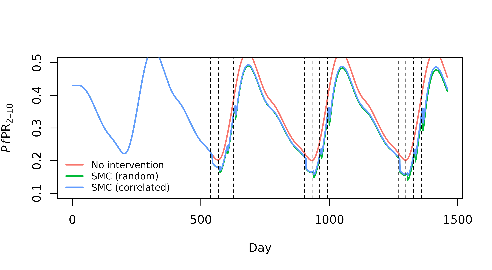

Introduction
SMC can be introduced using the set_smc() function.
Drugs are defined by four main parameters:
- drug_efficacy
- drug_rel_c
- shape_smc
- scale_smc
Preset values are available for SP_AQ, AL, and DHA_PQP (see ?set_drug_params for details). Alternatively, custom drug parameters can be input directly. Through these parameters, SMC influences transmission dynamics in three ways:
Prophylaxis Effect. Individuals who receive SMC are assumed to have a protection against infection with probability . wanes according to a Weibull distribution defined by parameters
shape_smcandscale_smc. This is modelled as an effective reduction in the force of infection within compartments receiving SMC.Infection Clearing Effect. Individuals who are currently infected and receiving SMC will be cleared of infection with probability
drug_efficacy. Clearance occurssmc_clearance_lagdays after date of SMC administration (default = 5 days).Reduced Infectivity. During the
smc_clearance_lagdays following SMC administration, currently infected individuals are assumed to have a reduced infectivity ofdrug_rel_c.
The assumptions behind the SMC parameterisation in
malariasimple are largely based on Thompson,2022
- Supplementary Materials.
Random Vs. Correlated
In malariasimulation, you can adjust the ‘correlation’
of an intervention to determine whether having previously received the
intervention makes an individual more/less/equally likely to receive the
same intervention in the future. This functionality currently does not
exist in malariasimple, however we can set two
extremes:
‘Random’ distribution Each individual within the defined age category has an equal chance of receiving SMC at each distribution event regardless of whether they received a dose previously. Equivalent to correlation = 0.
‘Correlated’ distribution Assumes doses are given to the same children each round. If a child receives SMC on the first distribution event, they will continue to receive further doses unless the coverage decreases. Equivalent to correlation = 1.
Using set_smc()
To fully define an SMC intervention, we can specify:
- SMC Drug:
drug(alternatively you can manually define drug parameters) - Days on which SMC administration events occur:
days - Proportion of age-eligible children covered:
coverages - Minimum age eligible for SMC:
min_age - Maximum age eligible for SMC:
min_age
Note: SMC age boundaries must align with age categories defined in get_parameters()
library(malariasimple)
n_years <- 4
n_days <- 4 * 365
##--------------------- Define Seasonality -------------------------
g0 <- 0.28
g <- c(-0.3, -0.03, 0.17)
h <- c(-0.35, 0.32, -0.07)
##--------------------- Define SMC parameters ----------------------
# Get day-of-year of peak vector carrying capacity
peak_cc <- get_peak_cc(g0, g, h)
# Schedule SMC administrations relative to peak carrying capacity
smc_offsets <- c(-60, -30, 0, 30)
#Hence, define SMC administration days
smc_days <- rep(365 * seq(1, n_years - 1, by = 1), each = length(smc_offsets)) +
peak_cc +
rep(smc_offsets, (n_years - 1))
#Assume linearly increasing SMC coverage from 30% -> 60% of target age group
smc_cov <- seq(0.3, 0.6, length.out = length(smc_days))Now we can set up the malariasimple parameters for different scenarios and run the models
## ------------ Seasonal transmission with no interventions ---------------
basic_params <- malariasimple::get_parameters(n_days = n_days,
age_vector = c(0, 1, 2, 3, 4, 5, 10, 20, 40, 60, 80) *
365) |>
malariasimple::set_seasonality(g0 = g0, g = g, h = h) |>
malariasimple::set_equilibrium(init_EIR = 10)
basic_out <- malariasimple::run_simulation(basic_params) |> as.data.frame()
## ---------- Seasonal transmission with 'random' SMC distribution --------
smc_random_params <- basic_params |>
malariasimple::set_smc(
coverages = smc_cov,
days = smc_days,
min_age = 1 * 365,
max_age = 5 * 365,
distribution_type = "random",
drug = "AL"
) |>
malariasimple::set_equilibrium(init_EIR = 10)
smc_random_out <- malariasimple::run_simulation(smc_random_params) |> as.data.frame()
## ---------- Seasonal transmission with 'correlated' SMC distribution --------
smc_corr_params <- basic_params |>
malariasimple::set_smc(
coverages = smc_cov,
days = smc_days,
min_age = 1 * 365,
max_age = 5 * 365,
distribution_type = "correlated",
drug = "AL"
) |>
malariasimple::set_equilibrium(init_EIR = 10)
smc_corr_out <- malariasimple::run_simulation(smc_corr_params) |> as.data.frame()
## --------------------------- Plot PfPR[2-10] ----------------------------
plot(basic_out$time, basic_out$n_detect_730_3650/basic_out$n_730_3650,
type = "l", lwd = 2, col = "#F8766D", ylim = c(0.1,0.5),
xlab = "Day", ylab = expression(paste(italic(Pf),"PR"[2-10])))
lines(smc_random_out$time, smc_random_out$n_detect_730_3650/smc_random_out$n_730_3650,
type = "l", lwd = 2, col = "#00BA38",
xlab = "Day", ylab = expression(paste(italic(Pf),"PR"[2-10])))
lines(smc_corr_out$time, smc_corr_out$n_detect_730_3650/smc_corr_out$n_730_3650,
type = "l", lwd = 2, col = "#619CFF",
xlab = "Day", ylab = expression(paste(italic(Pf),"PR"[2-10])))
abline(v = smc_days, lty = 2)
legend("bottomleft", legend = c("No intervention", "SMC (random)", "SMC (correlated)"),
col = c("#F8766D","#00BA38","#619CFF"), lty = 1,
bty = "n", ncol = 1, cex = 0.8, lwd=2)